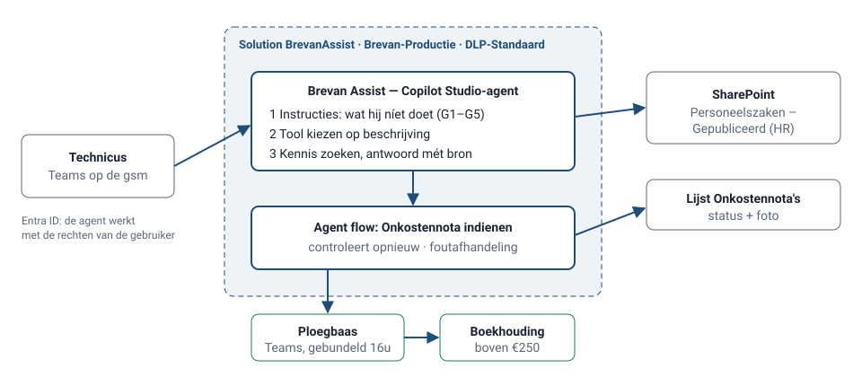

Licenties zonder gebruik
Niemand weet welk werk Copilot overneemt.
Independent portfolio case · fictieve organisatie · Philippe Godfroy
Een AI- en automatiseringstraject voor een fictieve installatie-kmo: discovery-workshop, use-caseportfolio, een Copilot Studio-agent met goedkeuringsflow, een testset van 40 vragen en Power Platform-governance.
Brevan Installaties (140 medewerkers, 92 technici op de baan) kocht 25 Microsoft 365 Copilot-licenties. Na vier maanden gebruikt een derde ze. Tegelijk vond IT een flow die urenstaten naar een privé-gmailadres stuurt. De zaakvoerder vraagt: wat kunnen we hier echt mee?
Niemand weet welk werk Copilot overneemt.
Meestal vragen die in het handboek staan.
Drie weken te laat, één op vijf zonder werf.
Flows in de default environment, op persoonlijke accounts.
Illustrative assumptions — not real company data.
Met de hele site slaagt de agent voor 29 van de 40 testvragen: het handboek van 2019 en een open loonmap sluipen in de antwoorden. Met alleen wat HR publiceert: 40 van de 40.
Verworpen: een extra regel "geef geen loonbedragen". ADR-004
Geld vraagt een mens. Ploegbazen krijgen één gebundelde Teams-melding per dag in plaats van een melding per nota tussen twee werven.
Verworpen: de agent keurt kleine bedragen zelf goed. ADR-003
Makers krijgen een eigen developer environment, bedrijfsdata blijft binnen M365, en een check blokkeert wat niet naar productie mag. De gmail-flow werd een gesprek, geen sanctie.
Verworpen: Power Platform volledig dichtzetten. Governance

40/40
testvragen geslaagd met de gepubliceerde bibliotheek (29/40 met de hele HR-site) — simulator, in CI
±€60
geraamd verbruik per maand, onder het plafond van €150
±38 u
per maand minder telefoons, wachten en najagen van onkostennota's (raming)
De testscores zijn het resultaat van de simulator op de testset. Verbruik en tijdswinst zijn illustrative assumptions — not real company data.
| Wat de rol vraagt | Bewijs | Waar |
|---|---|---|
| Noden en processen vertalen naar AI- en automatiseringsuse cases | workshopnotities, portfolio van 12 use cases met scoring en "niet doen" | Demo · Portfolio |
| Workshops, inspiratiesessies en discovery faciliteren | draaiboek 2,5 u, opbouw inspiratiesessie, one-pager in klanttaal | Draaiboek |
| AI-agents bouwen in Copilot Studio | agentontwerp met letterlijke instructies, simulator, bouwgids voor de echte agent | Demo · Ontwerp |
| Power Platform-oplossingen die repetitief werk automatiseren | agent flow met goedkeuring, drempels, escalatie en foutafhandeling; regels getest | Demo · Flow |
| Governance: security, compliance, lifecycle | environments, DLP, rollen, ALM, 10 regels met een check in CI | Demo · Pakket |
| Samenwerken met Change & Adoption | doelgroepen, weerstanden, training, KPI's | Overdracht |
Volledige mapping, met wat hier getoond wordt en wat niet geclaimd wordt
Demo laadt niet? Bekijk de screenshots.